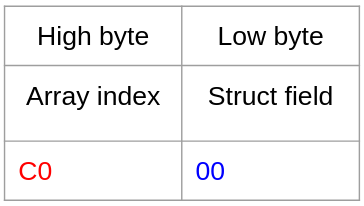

Esprit, like most video games, has a large array of complex "actors" or "entities" which move around and act within the game world. These entities' data structures tend to be very large and complex, as they have to support the myriad of unique species in one cohesive interface. However, the Game Boy's CPU adds on an extra challenge when it comes to these large data structures: indexing.
The Game Boy's SM83, being an 8-bit CPU, has a fairly restrictive instruction set. Limited to just 7 registers with only a few 16-bit operations, manipulating pointers (which are 16-bit on the system) is a common challenge. The system doesn't provide any indexing operations either, making register pressure an even bigger issue.
Game Boy programmers coming from the NES usually lament the lack of paging, which is often applied on that system for array-of-struct patterns. We tend to think of memory as a 1-dimensional tape, but the NES's 6502 models it as a 2-dimensional grid instead. Each "axis" of memory is one byte, perfect for an 8-bit CPU, and you still get the same total of 32KiB of addressable memory.
Of course, a hardware implementation is hardly necessary for manipulating memory in this way. In fact, the SM83's ability to combine 2 8-bit registers into a 16-bit register makes this 2-dimensional layout quite easy!

By spacing entries in an array exactly 256 bytes apart, we can identify the array index using the upper byte,
and the structure field on the lower byte (or vice-versa; Link's Awakening is notable for using the opposite layout).
This layout makes navigating fields exceedingly simple.
Where fields are in relation to each other is no longer pertinent information for a programmer to design around;
any field can be accessed in just a 2-cycle ld instruction.
Esprit uses this design for the up to 8 entities that can appear in a dungeon or cutscene. Compared to my previous project, using this pattern helped immensely, both reducing the time it took to add new features and the number of indexing-related bugs I ran into. This layout isn't appropriate for every array-of-structs, of course, but any large and complex structures are greatly simplified by this approach.
It's also important to note that these structures don't need to be aligned to xx00;
this means that multiple arrays-of-structs can span the same pages,
and any regions of memory which do need to be placed exactly at xx00, such as OAM, can still do so.

Speaking of drawbacks, this method has a few notable issues that one should be aware of.
The most immediate shortcoming you'll notice is a lack of linker support;
RGBLINK, at the time of writing, does not have a way to model the array-of-structs pattern,
meaning addresses need to be hard-coded.
While this is usually discouraged (and feels a bit dirty to do),
I ultimately found that it was well worth it for the convienience and performance benefits.
You can pretty easily accomplish this in RGBASM with a for loop.
Another common complaint is the way it fragments the program's memory. Since gaps are left between structures, the amount of large, contiguous blocks of data that can fit into RAM is reduced. A commonly cited example is the Mario Land series, which uses a level format so large that it spans both WRAM and SRAM. However, these types of structures tend to be rare; most RAM regions are only a few bytes in size. Depite the fact that Esprit's map is 16,384 (0x4000) bytes — half of WRAM — the memory fragmentation didn't turn out to be an issue for this project, so array-of structs works great.